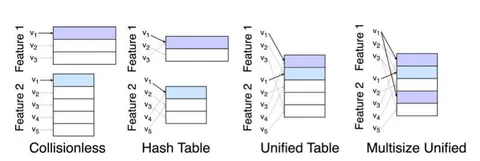

Сейчас в RecSys много говорят о семантических ID для кодирования айтемов. У нас в «Рекомендательной» уже были материалы о разных алгоритмах с этой техникой:
• Recommender Systems with Generative Retrieval
• From Features to Transformers: Redefining Ranking for Scalable Impact
• OneRec: Unifying Retrieve and Rank with Generative Recommender and Iterative Preference Alignment
• Learnable Item Tokenization for Generative Recommendation
Но также вспомним классические методы кодирования айтемов. Один из популярных и очень мощных на практике — Multisize Unified Embeddings. Он предоставляет способ кодирования набора категориальных признаков произвольной кардинальности в единый вектор.
Как это работает.
Пусть дан набор айтемов D={x₁,…,x_N}. Каждый из них описан T категориальными признаками x = [v₁,…,v_T], где vₜ∈Vₜ.
Классические подходы к кодированию
1. Collisionless (без коллизий)
– Для каждого признака t и каждого его значения vₜ хранится отдельный вектор-эмбеддинг.
– Плюс: нет коллизий.
– Минус: память растёт пропорционально сумме кардинальностей всех Vₜ.
2. Hash Table (feature hashing)
– Каждое значение одного признака хешируется в таблицу размера M.
– Плюс: фиксированный объём памяти, независимо от числа значений.
– Минус: внутрипризнаковые коллизии искажают градиенты и ухудшают качество.
Подход Unified Table
Авторы предлагают объединить всё в одну общую хеш-таблицу размера M, но использовать для каждого признака свою хеш-функцию hₜ:
– Плюс: только одна таблица, всего два гиперпараметра (M и параметры хеша).
– Минус: появляются межпризнаковые коллизии, когда значения разных признаков попадают в один и тот же бакет.
Полученные эмбеддинги всех признаков конкатенируют, а затем подают в последующую нейросеть.
Теоретический анализ из статьи показывает:
– Межпризнаковые коллизии (случай t≠s, когда hₜ(v) и hₛ(u) уходят в один бакет) нейтрализуются последующей нейросетью: для каждой группы модель учит почти ортогональные проекции. Такие коллизии не влияют на качество.
– Внутрипризнаковые коллизии (разные v₁,v₂∈Vₜ хешируются в один бакет) создают устойчивое смещение градиента и ухудшают качество решаемой задачи.
Улучшение: Multisize Unified Table
Для каждого признака t вместо одного хеша используют сразу k независимых хеш-функций hₜ¹…hₜᵏ→[1…M].
– «Плохие» внутрипризнаковые коллизии почти исчезают;
– Объём памяти остаётся таким же, как в Unified Table.
Итог
Multisize Unified Embeddings дают качество, сопоставимое с отдельными таблицами эмбеддингов, но требуют в разы меньше памяти и отлично масштабируются на web-scale.
@RecSysChannel
Разбор подготовил
